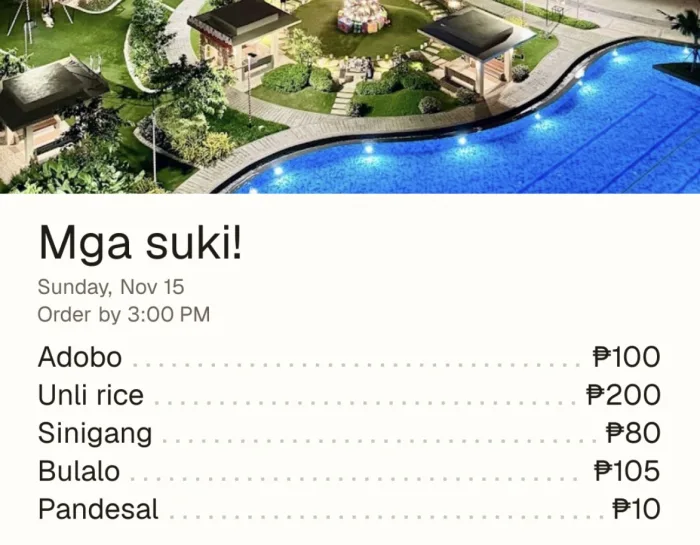

Before you start
- Your email and a way to open it, or your Google account.
- Your shop name, product names and prices, and a closing time for orders.
- A picture of your own GCash, Maya or bank receiving QR, saved on your phone.
- Optional: your contact number or Messenger link, and one photo for your shop card.
1. Sign in and set up your shop
- Open Tinda and tap Start selling — 14 days free. Tap Continue with Google, or enter your email and tap Email me a 6-digit code. The first time, you tick a box to accept the terms. Tap See the house rules to read them.
- If using email, open the email, return to Tinda, enter the six digits and sign in.
- Enter your shop name and choose your shop link, for example
tinda.calmdownoscar.com/aling-nena. Check the link carefully: you cannot change it later. - Optionally add a mobile number or Messenger link so buyers can contact you. Read the terms, tick the agreement box, and tap Create my shop.
You can rename your shop later from your seller home. Your shop link stays the same.
2. Add your payment QR
- In your GCash, Maya or bank app, save your receiving QR as a picture on your phone.
- Open Today’s list and scroll to 4. Payment. Tap Choose QR picture, choose the saved image, and wait for QR saved ✓. You need at least one receiving QR before you can publish. Buyers see it after they order and pay you directly.
- To manage or change your QRs, open the Payment page. You can add up to five QRs and a backup GCash number.
This is your QR for receiving buyer payments. It is separate from the Tinda QR used to pay for your plan.
3. Post today’s list
- From your shop page, open Today’s list. In the paste box, put one product and its price on each line. For example:
Rice 1 kg 60 Toilet paper 4 rolls 50 Adobo 90
- Tap Read my post. Or tap or type items to enter them one by one.
- Check every name and price and correct any mistakes. Tick Heading for a section title that is not a product, such as Drinks. Optionally enter how many of each item you have. Each item can have a short description (up to 120 characters). Buyers see it under the item name.
- Under Orders and delivery, set Stop taking orders at to a time later than now. Choose how long to Hold unpaid orders for. Pickup is available; if you deliver, tick I deliver and add delivery times. If you offer pickup, add your pickup place under Orders and delivery (up to 120 characters). It shows only on pickup receipts.
- Optionally tick Keep my list up. Each night Tinda puts up a copy for the next day with the stock left. It starts after you publish, and stops if you do not publish again for 30 days or your plan is unpaid. Publish again to restart or extend it.
- Optionally add one photo of your products for your shop card. This is one shop picture, not a photo for each item.
- Check the preview that appears beside your list. Tap Save for later to keep a draft private, or Publish to make it available to buyers. After changing a published list, tap Update list.
Make it yours (optional)
On Today’s list, or under Menu picture and photo on your seller home, choose the style, colour, font and background of your menu picture and shop page. Fonts: Payak (the default), Bilog, Sulat-kamay, Klasiko and Malaki. Backgrounds: cream (the default) and five other tints. Changes save by themselves, and the preview updates as you go.

5. Confirm payments
- When a buyer orders, the items are held while they pay. If no reference arrives in time, the order ends and the items return to the list.
- Open Orders when a buyer enters a payment reference. Check your GCash, Maya or bank app for the payment, then tap Paid ✓.
- If you cannot find it, tap Can’t find it. The buyer can check and enter the reference again, up to three tries in all. If you tap Paid by mistake, tap Undo within 10 minutes.
Buyers can add a short note to their order (up to 140 characters). You see it in your order list, and it is on their receipt.
If buyers report a problem, we may pause your shop while we look into it. You’ll get an email and can reply to it.
6. Orders from chat or in person
Open Orders and tap Add an order from chat. Choose the items, enter the buyer details, then tap Add order. It counts toward your stock and tally.
7. See what to prepare
Open Orders and scroll to Tally to see how many of each item to prepare, split into pickups and deliveries.
8. Your free trial
Your first 14 days are free. After that, Tinda is ₱59 a month or ₱590 a year (2 months free).
- Open Plan and payment on your shop page.
- Pay the Tinda QR with GCash or Maya and enter the reference number. We check it, usually within a day.
- Nothing renews by itself. To stop, just don’t pay again. If you change your mind, ask within 7 days of paying for a full refund.
If you need help
- Publish is grey: read the reasons shown beside it and fix each one, such as a missing QR or a closing time that has passed.
- A product is missing: check that Heading is unticked for that product and enter its price, then publish or update the list.
- A name or price is wrong: edit it on today’s list, check the preview, then publish or update the list. Save and post a new image too.
- The image did not download: check Files or Downloads, or use the image menu if your phone opened it instead.
- No orders yet: check that your list is published and share the clickable link with your image. Open the link to check what buyers see.
- Coming back tomorrow: open your shop and tap Copy yesterday’s list, change what is different and publish. If Keep my list up is on, check the copied list and stock; it stops after 30 days without a new publish.
Install Tinda on your phone
- Android (Chrome): open your seller home, tap the ⋮ menu, then Add to Home screen.
- iPhone (Safari): open your seller home, tap Share, then Add to Home Screen.
Questions? See the FAQ or the live guide.